Yadex $VERSION ($SOURCE_DATE)
User's guide
| Warning : this document is unfinished, ill-structured and incomplete. |
| Warning : this document is unfinished, ill-structured and incomplete. |
Contents :
Yadex is a Doom level (wad) editor for Unix systems running X, including Linux. It supports Doom, Doom II, Ultimate Doom, Final Doom, Heretic, Doom press release pre-beta and also, in a more or less limited way, Hexen, Strife and Doom alpha. It is available under the terms of the GPL.
To compile, install and run this release of Yadex, you need
More specifically, Yadex expects that
ctype.h accept the range
CHAR_MIN through UCHAR_MAX,
hypot() and at least one
of nanosleep() and usleep().
A shareware Doom or Heretic iwad or a demo Hexen or Strife iwad is okay but you need a registered iwad if you want to be able to save your changes.
Yadex conforms to the FHS (filesystem hierarchy standard). The installation procedure will try to copy files in the following directories, creating the directories if they don't exist ;
/usr/local/bin
/usr/local/etc
/usr/local/man/man6
/usr/local/share/games
So make sure you have the necessary rights before installing (or change the makefile).
Yadex uses about 270 different colours. In most cases, on PseudoColor displays, there aren't that many free colour cells. So, if it detects a PseudoColor display, Yadex uses a private colormap so as to get as many free colour cells as possible. The inconvenient of this method is that, when you're in the Yadex window, all other windows are displayed with wrong colours and vice-versa.
What's more, as PseudoColor displays typically have 256 colours (at least on PC), which is less than the number of colours needed, Yadex might have to assign the same physical colour to different logical colours. If it happens, it will try to render the colours of the game accurately at the expense of the application colours.
Monochrome displays might work but they have not been tested.
Executive summary: if you can, use a TrueColor or DirectColor
display and a depth of more than 8 bits per pixel (E.G. by
launching X with "startx -- -bpp 16").
A 640x480 screen is okay though, of course, a larger display is better.
README.
Don't forget to tell Yadex where your iwads are by changing
the lines "iwad1 =",
"iwad2 =" etc. in
/usr/local/etc/yadex.cfg. If there is an iwad you
don't have, you can just comment out the corresponding line.
Yadex takes two sorts of command line arguments :
parameters and options. An option is a command line argument
that starts with a "-".
Some options take an argument. The argument must be
separated from the option by some whitespace.
Constructs like "-othingy" are not
recognized. You have to type "-o thingy".
The "-file" option takes a variable number of
arguments. It uses all the non-options up to the next option.
The options that take no argument can be negated by using a
"+" instead of a "-". For example,
"+sb" will undo the effect of a
"swap_buttons = true" directive in the
config file.
In general, if you specify the same option more than once,
the last occurrence overrides the previous ones. For example,
"yadex +P -P" is equivalent to
"yadex -P". Similarly,
"yadex -i1 foo.wad -i1 bar.wad -i1 baz.wad"
boils down to "yadex -i1 baz.wad".
The "-pwad" (or "-pw") option,
however are additive. Each occurrence will add to the previous
ones. For instance,
"yadex -pwad foo.wad -pwad bar.wad"
is equivalent to "yadex foo.wad bar.wad".
Any command line argument that is not an option is treated as the name of a pwad to load. You can put as many names of pwads on the command line as you wish (or none at all). The details of specifying pwad names are discussed there.
To know about the command line options that Yadex understands, type
$ yadex --help
You'll get this:
-f -config_file string Config file
-d -debug Debug mode
-e -expert Expert mode
-fc -fake_cursor Fake cursor
-fn -font string Font name
-g -game string Game
-h -height integer Initial window height
-? -help --help Show usage summary
-i1 -iwad1 string The name of Doom iwad
-i2 -iwad2 string The name of the Doom II iwad
-i3 -iwad3 string The name of the Heretic iwad
-i4 -iwad4 string The name of the Hexen iwad
-i5 -iwad5 string The name of the Strife iwad
-i6 -iwad6 string The name of the Doom alpha 0.2 iwad
-i7 -iwad7 string The name of the Doom alpha 0.4 iwad
-i8 -iwad8 string The name of the Doom alpha 0.5 iwad
-i9 -iwad9 string The name of the Doom press release iwad
-i10 -iwad10 string The name of the Strife 1.0 iwad
-pw -pwad string Pwad file to load
-P -no_pixmap No pixmap, saves memory, more flicker
-q -quiet Quiet mode
-qq -quieter Quieter mode
-s0 -select0 Automatic selection of 0th object
-sb -swap_buttons Swap mouse buttons
-td -text_dot DrawScreenText debug flag
-v -verbose Verbose mode
--version Print version and exit
-w -width integer Initial window width
-z -zoom integer Initial zoom factor
You might wonder what the "-file",
"-pw" and "-pwad" options are for
since it's so simple to just put the names of the pwads
on the command line. The answer is that they're only here
for compatibility with previous versions of Yadex/Yade/DEU.
Don't use them. They might go away one day.
Yadex can handle several games (Doom, Doom II, Heretic, etc.) but only one at a time. Unfortunately, that game can't be changed dynamically. If you want to switch game, you must quit Yadex and run it again.
By default, the game used is the one specified by the
"game=" directive in the configuration file. If
you want to override the default, use "-g
game".
The allowed values for game are :
doom"
doom02"
doom04"
doom05"
doom2"
doompr"
heretic"
hexen"
strife"
strife10"
Not all those games are fully supported. For details, see there.
When you have to specify the name of a pwad to load, for
example in the r command, or as a command line
argument, you don't always have to spell it all out.
.wad extension can be omitted,
it will be added automatically.
For example, specifying the name "foo"
is equivalent to specifying "foo.wad".
An unfortunate consequence of this convention is
that it's impossible to load a wad that would be
really called "foo".
Though, under DOS, you can still work around this limitation
by specifying the name with a trailing dot,
("foo.").
/usr/local/share/games/game,
/usr/share/games/game,
/usr/local/share/games/wads,
/usr/share/games/wads,
On the other hand, if you give an absolute file name, that is
one that begins with a "/", the standard
directories will not be used. Yadex will only try to
open the file of the exact name you specified.
For example, if you type "yadex -g doom2
foo/bar", Yadex will look for the following files in
order :
~/foo/bar.wad,
/usr/local/share/games/doom2/foo/bar.wad,
/usr/share/games/doom2/foo/bar.wad,
/usr/local/share/games/wads/foo/bar.wad,
/usr/share/games/wads/foo/bar.wad,
But if you type
"yadex -g doom2 /foo/bar" (note the
leading slash), Yadex will try to open
"/foo/bar.wad", period.
The philosophy behind those standard directories is that :
Gotcha: those shorthands can only be used when reading a pwad. When writing to a pwad, you always have to specify the exact name, with the full path and extension.
DOOMWADDIR
DOOMWADDIR is not supported.
Perhaps in another version...
DISPLAY
YADEX_GAME
game parameter in the config file,
is overridden by the -g command line option.
Like Doom, Yadex accepts the addition and replacement of resources from a pwad. In general, if the same resource is defined in several wads, the last definition is used. This is also true if the same resource is defined several times in the same wad. It's not recommended that you use lower case names in your wads; sometimes it's handled but sometimes it's not. So always use upper-case names.
FF_START/F_END or
FF_START/FF_END labels. There can be
any number of FF_START/F_END and
FF_START/FF_END pairs and they don't
have to be in the same pwad. If there are several lumps for the
same flat, the last one is used.
PLAYPAL lump, it's
used. If there are several PLAYPAL lumps, the last
one is used.
PNAMES lump. If there are several
PNAMES lumps, the last one is used. If there are
several lumps for the same flat, the last one is used.
There is a bug in the handling of replacement patches:
they're normally expected to be between PP_START
and PP_END but, if they are, Yadex ignores them.
For example, a pwad that contains only the RSKY1
lump will work but a pwad that contains PP_START,
RSKY1, PP_END will not. This will be
fixed in another release.
TEXTURE1 or TEXTURE2 lump. If the same
texture happens to be defined in both TEXTURE1 and
TEXTURE2 (which should not happen), only the
definition in TEXTURE1 is used. If there are
several TEXTURE1 lumps, the last one is used. If
there are several TEXTURE2 lumps, the last one is
used. If it exists, TEXTURE2 is always susceptible
to be used, even for games where it's not supposed to exist,
like Doom II.
If you edit a level from a file and there exists a file in
the same directory with the same name but with the extension
.yl, that file will be used to keep track of the
time you spent editing that level. At the end of the editing
session, Yadex will append a line to the .yl file
with the name of the level and the number of minutes spent on
it.
Note that if the .yl file does not already
exist, it is not created. This is to prevent the
creation of a large number of small useless files when browsing
through a collection of wads. Thus, if you want to enable
logging, you need to manually create the log file first with a
command such as "touch name.yl".
You can get a summary of the prompt commands
by typing "?" at the Yadex prompt.
In the X11 version, the only way to do that is to move the pointer device (i.e. the mouse).
The arrow keys [Left], [Right],
[Up] and [Down] scroll a little at a time,
by default 10% of the screen/window width or height. You can
change the exact amount by setting the variable
scroll_less in the configuration file.
[Page-up], [Page-down],
[Home] and [End] scroll more at a time, by
default 90% of the screen/window width or height. You can change
the exact amount by setting the variable
scroll_more in the configuration file.
By default, autoscrolling is disabled. You can enable it by
setting autoscroll to true in the
configuration file.
When it is enabled and the pointer is close to the edge of the screen/window, the map scrolls automatically. The closer you are to the edge, the faster it scrolls. Autoscrolling is always disabled near the menu bar items so that the map does not scroll when you're reaching for the menu.
You can fine tune autoscrolling by changing the variables
autoscroll_amp and autoscroll_edge.
I plan to develop a full set-mark/jump-to-mark system similar
to the one in vi, with
mmark-name, 'mark-name
and `mark-name.
For the moment, if you press ['], the map scrolls so that its centre is at the centre of the screen/window.
If you press [`], the map scrolls so that its centre is at the centre of the screen/window and the zoom factor is adjusted so that the whole map is visible and almost fills the screen/window.
The current zoom factor is shown on the info bar, after the
word "Scale:". It is shown in pixels per map
units. The indication "Scale: 1/2" means that one
pixel of the display corresponds to 2 map units.
You can zoom in by pressing [+] or [=] or the 4th mouse button or by moving the mouse wheel "up".
You can zoom out by pressing [-] or [_] or the 5th mouse button or by moving the mouse wheel "down".
You can also set the zoom factor directly with the keys [0] through [9].
The grid is a square mesh of blue lines in the background. It's here to help you aligning your objects correctly with regard to Doom's metrics, which will save you a lot of textures misalignments.
When you insert or drag objects, they are snapped to
grid. That is Yadex prevents you from placing them
off the grid. You can toggle the snap_to_grid flag
by pressing [y].
The grid step is always a power of 2, E.G. 128, 64, 32, etc.
You can get a finer grid (dividing the grid step by 2) by
pressing [g]. Conversely, pressing [G]
multiplies the grid step by 2. If you press [g] when
the grid step is already at its minimum value, it will be set to
its maximum value. And conversely. The minimum and maximum
values are set in the configuration file with
grid_min and grid_max.
When you change the zoom factor, Yadex automatically changes the grid step to make it what it thinks is best for the new zoom factor. If you want to lock the grid step to its current value, press [z]. To unlock it, press that key again.
You can hide the grid by pressing [h] (but this
doesn't disable snap_to_grid). Press that key
again to make the grid visible again.
You can also use [H] to reset the grid step.
By pressing [Ins], you insert a new object under the pointer.
The type of the new object is generally determined by the current mode. That is, if you are in things mode, pressing [Ins] will create a new thing. However, this is not always true, particularly if some objects are already selected :
If an object of the same type is highlighted at the moment you press [Ins], the properties of the new object are copied from the highlighted object. In other words, the highlighted object serves as a "model". Else the properties of the new object are set to default values.
| Object type | Property | Value if there is a model | Value if there is no model |
|---|---|---|---|
| Linedef | Start vertex | Like the model | If there are two selected vertices, the first. If not, you are prompted for a vertex number. |
| End vertex | Like the model | If there are two selected vertices, the second. If not, you are prompted for a vertex number. | |
| Flags | Like the model | Impassable | |
| Type | Like the model | 0 (normal) | |
| Sector tag | Like the model | 0 (none) | |
| First sidedef | FFFFh (none) | FFFFh (none) | |
| Second sidedef | FFFFh (none) | FFFFh (none) | |
| Thing | Coordinates | Like the pointer | Like the pointer |
| Type | Like the model | default_thing
| |
| Flags | Like the model | D12 D3 D45 | |
| Angle | Like the model | 0 (east) | |
| Sector | Floor height | Like the model | default_floor_height
|
| Ceiling height | Like the model | default_ceiling_height
| |
| Floor texture | Like the model | default_floor_texture
| |
| Ceiling texture | Like the model | default_ceiling_texture
| |
| Light level | Like the model | default_light_level
| |
| Type | Like the model | 0 (normal) | |
| Tag | Like the model | 0 (none) | |
| Vertex | Coordinates |
When you press [o], the selected or highlighted object(s) is(are) copied. If only one object has been copied, the new copy is spawned under the pointer. If several objects have been copied, the new copies are spawned so that their centre is under the pointer.
The new copies are spawned selected and everything else is unselected so that you can easily drag them where you want.
All the properties of the new objects are copied from the original objects with the notable exception of references. If you are an OO programmer, think shallow copy vs. deep copy. Otherwise, read on.
When you copy linedefs, the start and end vertices are copied
too and the new linedefs reference the new vertices instead of
the old ones. The same thing goes for sidedefs, except if the
copy_linedef_reuse_sidedefs flag is true. In that
case, each new linedef uses the same sidedefs as its "model"
did. This is useful when you want to create many similar
structures, E.G. pillars that stand in the same sector. When all
the structures use the same sidedefs, you can change all
structures at once by editing only one of them. Another benefit
of sharing sidedefs is that it makes your wad file somewhat
leaner, since the sidedef, at 30 bytes, is the largest level
object.
However, sharing sidedefs makes impossible to change one structure independantly of the others. That's where the "unlink sidedef" function enters. If you select one or more linedefs and unlink their sidedefs, Yadex makes the necessary duplications so that none of the sidedefs they use is also used by any other linedef outside the selection. Thus you can edit your linedefs freely. The "unlink sidedef" operation is described in detail there.
Similarly, when you copy sectors, the linedefs, sidedefs and
vertices are duplicated and the new sectors use the copies, not
the original ones. Note that the
copy_linedef_reuse_sidedefs has not effect when
copying sectors; the new linedefs always use new sidedefs, even
if that flag is set.
What about copying things and vertices ? Well, those don't contain references to other objects, so there are no special precautions to take when duplicating them. Except for the position, the copy is exactly identical to the original.
However, for certain things, the relative numbers of objects matter :
So how do you control the ordering of objects ?
At the same time the numbers are exchanged, all relevant references are fixed up. That is, if you exchange the numbers of two vertices, all the linedefs that referred to them are changed accordingly. And if you exchange the numbers of two sectors, all the sidedefs that referred to them are fixed. The thing to remember is that this function leaves the level functionally identical to what it was before, except of course for the possible side effects of the renumbering itself.
(If you wanted (for some reason I can't imagine) to
exchange the numbers without fixing the references, you could do
it by replacing true by false in the
call to exchange_objects_numbers().)
If you want to select an object without unselecting everything else, do the same thing but keep [Ctrl] pressed while you click. You can also unselect an object this way.
You can also select several objects at a time with a selection box. You know how to draw a selection box, don't you ? Well, it works the same in Yadex. If press [Ctrl] while setting the first corner of the box, all objects in the box will be "toggle-selected" (that is, selected if they weren't, unselected if they were).
A more advanced way to select objects is path-selection. With path selection, you can easily select all the linedefs that form an object with a single keystroke. There are two variants of path selection.
To use the first, you must first highlight a linedef. Then
press [e]. All the linedefs that belong to the same
non-forked path as the highlighted linedef are selected. For
example :
| 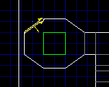 | 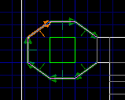 |
| Before pressing [e] | After pressing [e] |
The other variant of path selection is better to select all
the linedefs that form a single pillar, even if not all of its
sides face the same sector. To use it, highlight a single-sided
linedef and press [E]. All the single-sided linedefs
that belong to the same path as the original one are
highlighted. For example :
| 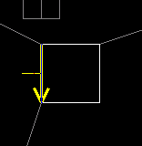 | 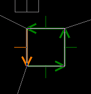 |
| Before pressing [E] | After pressing [E] |
Like clicking, [e] and [E] have the effect of unselecting everything else that was previously selected unless you use [Ctrl]. If [Ctrl] was pressed at the time you pressed [e] or [E], all the linedefs that would have been selected if you didn't press [Ctrl] are either removed from the selection (if they were previously selected) or added to the selection (if they weren't). This is actually simpler than it sounds.
The [Shift] key has an interesting property ; as long as you hold it down, the highlight is locked. If an object is not highlighted, it stays so even if you bring the mouse pointer over it. Likewise, if an object is already highlighted, it remains so, even if you move the pointer away from it.
This can be useful in certain occasions, such as when you want to compare two sectors that have other sectors between them.
This function is designed to be used on either the whole level or a group of isolated sectors (like in the screenshots below). It is not recommended to use it on a group of sectors if that group is connected to other sectors. You can do it but the resulting mess might take you some time to untangle, especially if there are many connecting linedefs.
A common use for this function is when you have a symmetrical room with, say, the same staircase on both sides of the axis of symmetry. You can build one staircase, make a copy of it, mirror the copy and paste it on the other side of the room.
See the "Mirror horizontally" linedef function.
This function is designed to be used on either the whole level or a group of isolated sectors (like in the screenshots below). It is not recommended to use it on a group of sectors if that group is connected to other sectors. You can do it but the resulting mess might take you some time to untangle, especially if there are many connecting linedefs.
A common use for this function is when you have a symmetrical room with, say, the same staircase on both sides of the axis of symmetry. You can build one staircase, make a copy of it, mirror the copy and paste it on the other side of the room.
See the "Mirror vertically" linedef function.
It is not possible to mirror things without changing their
angle (short of commenting out a couple of lines in
x_mirror.cc and recompiling, of course).
It is not possible to mirror things without changing their
angle (short of commenting out a couple of lines in
x_mirror.cc and recompiling, of course).
In things mode, press [a] to open the "set thing
flags" popup menu.
Press [b] to open the "toggle
thing flags" popup menu.
Press [c] to open the
"clear thing flags" popup menu.
See the "Mirror horizontally" linedef function.
See the "Mirror vertically" linedef function.
The key [x] is a shortcut to this function.
The new linedef goes from the first selected linedef to the second selected linedef. The new sector is on the second sidedef of the new linedef.
There is a bug in this function ; if the sector contains other sectors, some sidedefs are given the wrong sector number. Jim Flynn has recently fixed this in DETH. Anyone to look into it ?
The key [w] is a shortcut to this function.
If you want to flip linedefs without swapping their sidedefs, you have to use "Flip linedefs" then "Swap sidedefs" on them.
It sets the I flag, clears the 2 flag and sets the second sidedef to -1.
If the linedef is not long enough, the length of the nook is one third of the length of the linedef.
| 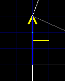 | 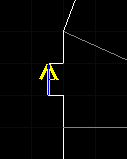 |
| Before | After |
Here is how it works : all sidedefs that are used on the first side of any linedef in the selection and on any side of any linedef not in the selection are duplicated and the first side of the concerned linedefs in the selection is set to use the copy instead of the original.
Gotcha : note that the selected linedefs are not "unlinked" from each other. They are only "unlinked" from any other (i.e. non-selected) linedefs. Thus, if you have n linedefs that you want to unlink from each other, you have to unlink every one of them separately. This is so that, if you have, say, two square pillars (2 x 4 linedefs that all use the same sidedef), you can easily unlink one pillar from the other while still having its 4 linedefs all use the same sidedef.
| 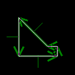 | 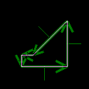 |
| Before | After |
This function is designed to be used on either the whole level or a group of isolated linedefs (like in the screenshots below). It is not recommended to use it on a group of linedefs if that group is connected to other linedefs. You can do it but the resulting mess might take you some time to untangle, especially if there are many connecting linedefs.
A common use for this function is when you have a symmetrical room with, say, the same staircase on both sides of the axis of symmetry. You can build one staircase, make a copy of it, mirror the copy and paste it on the other side of the room.
| 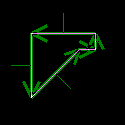 | |
| Before | After |
This function is designed to be used on either the whole level or a group of isolated linedefs (like in the screenshots below). It is not recommended to use it on a group of linedefs if that group is connected to other linedefs. You can do it but the resulting mess might take you some time to untangle, especially if there are many connecting linedefs.
A common use for this function is when you have a symmetrical room with, say, the same staircase on both sides of the axis of symmetry. You can build one staircase, make a copy of it, mirror the copy and paste it on the other side of the room.
In linedefs mode, press [a] to open the "set
linedef flags" popup menu.
Press [b] to open the "toggle linedef flags" popup menu.
Press [c] to open the "clear linedef flags" popup menu.
As of this release, undoing is not implemented.
As of this release, it's not possible.
Flats, sprites and textures are browsed and selected with the same basic tool, snappily named the flat/sprite/texture viewer. How do you use that beast ?
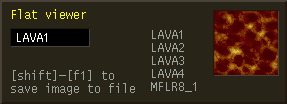
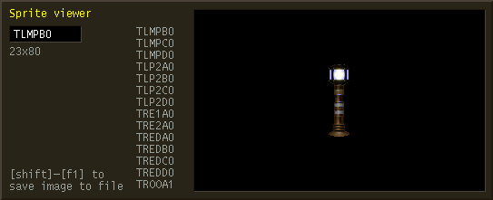
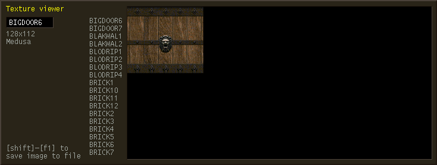
You can change the current name simply by typing it. Use [Backspace] to erase the rightmost character. As you type, the list of names scrolls automatically so that the first line of the list shows the first valid name that begins with the characters in the entry box. If the current name does not belong to the list, it is grayed out and you can't validate. If it does, the corresponding image is shown in the box to the right.
As in certain Unix programs, [Tab] is used for
name completion. If the current name is "SW1" and
you press [Tab], the current name is set to the first
name that begins with "SW1".
[Ctrl-u] and [Ctrl-w] clear the current name, like pressing [Backspace] repeatedly would.
You can also move through the list without typing names :
To validate the current name as your choice, press [Return]. If the current name is grayed-out (invalid), [Return] does not work. To cancel, press [Esc].
In the DOS version, pressing [Shift-F1] used to save the current flat/sprite/texture to a GIF file. However, in the X11 version, this function is currently a no-op because I've not taken the time to port the Gifsave library to Unix yet. Besides, I'd rather use PPM and/or PNG than GIF.
Finally when viewing sprites, two other useful commands are [Ctrl-n] and [Ctrl-p]. These go respectively to the next and previous group of sprites (all sprites that have the same first 4 letters belong to the same group). It's handy to skip the 69 animation frames of the heavy weapon dude at once.
There are two ways to save :
The level in the window is saved in the specified file, in
the pwad format, under the specified .
FIXME -- this needs to be written...
If Yadex is in Hexen mode, saving is disabled because writing levels in the Hexen format is not supported as of this release.
There are two ways to close a window :
There are several ways to configure Yadex : the configuration file, the environment variables, the command line options and the Preferences menu.
The choices made in the Preferences menu override all others but they are lost when you exit Yadex.
The command line options override the environment variables which in turn override the configuration file.
The details of command line options and environment variables are explained elsewhere.
When you create objects, their properties are automatically given default values. Some of those default values can be set from the configuration file or from the command line but also through the Preferences menu, that pops up when you press [F5].
The settings entered through the Preferences menu are lost when you exit Yadex.
If you don't specify "-f" on the command line,
Yadex tries to open the following files in order :
./yadex.cfg
~/yadex.cfg
install_dir/yadex.cfg
/usr/local/etc/yadex.cfg
/etc/yadex.cfg
The first file found is used.
If you use "-f file" and
"file" is an absolute name (i.e. it starts
with "/"), only that name is used.
If "file" is a relative name, the
standard directories will be searched for a file of that name
instead of "yadex.cfg". For example, if you
specify "-f foo/bar", Yadex will try to open
"./foo/bar", "~/foo/bar", and so on.
For Yadex to recognize the file as a configuration file, its
first line must contain exactly the following characters :
"# Yadex configuration file version 2"
(without the double quotes). If it doesn't, Yadex will print an
error message and bail out. The reason for being so fussy is to
avoid headaches when the configuration file format changes and
there are old configuration files lying around in your
directories.
The configuration file is self-documenting. Look at the sample configuration file in the Yadex distribution to see what options are available.
A lot of Yadex's knowledge about thing numbers and names,
linedef types etc. is stored in so-called game definition files.
When you specify "-g foo", it in fact means that
Yadex should use the game definition file named
"foo.ygd".
When looking for the game definition file, Yadex tries those names in order :
./game.ygd
~/game.ygd
install_dir/game.ygd
/usr/local/share/games/game.ygd
/usr/share/games/game.ygd
For Yadex to recognize the file as a game definition file, they must begin with a certain magic string. If they don't, Yadex will print an error message an bail out. The reason for being so fussy is to avoid headaches when the game definition file format changes and there are old game definition files lying around in your directories.
Game definition files are not supposed to be modified in normal use. Their format is described there.
By default, Yadex uses the default font of your system (that
is often "fixed" a.k.a. "6x13"). But
you can use the font of your choice by using the "-fn
font_name" option or setting
"font = font_name" in
yadex.cfg. You should use a fixed-width font and
not one that is too large for the size of your Yadex window or
the display will look ugly.
You can get a list of all available fonts on your system
with the command xlsfonts.
The mouse 3rd button is not used yet but you can bet it will a future version. So a 3-button mouse is of course recommended.
People who have a mouse with more than 3 buttons, rejoyce ! Buttons 4 and 5 are used (for zooming in and out). See the paragraph on mice wheels below.
You can swap the left and right buttons by setting the swap_buttons
variable.
The wheel that certain recent mice have is supported. But to
be able to use it, you need to first make X aware that your
mouse has a wheel. There are several ways to do that and they
might vary depending on which X server you have. I have XFree86
and a Logitech Pilot Mouse + and this is what I put in my
XF86Config file :
Section "Pointer"
Protocol "Intellimouse"
Device "/dev/mouse"
Buttons 5
ZAxisMapping 4 5
This means that the wheel is mapped to buttons 4 and 5. When you roll the wheel "up" (forwards), button4 press events are generated. When you roll the wheel "down" (backwards), button5 press events are generated.
Once you have done that, not only you can use the wheel in
Yadex to zoom in and out but can also use it in all other X
applications. That is, those that have bindings for buttons 4
and 5. One such application is xterm : the wheel
scrolls the window up and down through the scrolling region.
Though Yadex has quite a few bugs, most of them are inconsequential, i.e. not likely to make Yadex unusable or damage precious data. On the other hand, some can bite. Those are the ones you should know about :
TODO for a complete list
of things to fix.
Supported. Linedef types and sector types added in v. 1.666
are supported and marked with "[v1.6]".
Supported.
Mostly supported. There are three Doom alpha versions that I
know of : 0.2,
0.4
and 0.5.
They're supported to a varying degree of completeness. All
graphics resources (flats, patches, PLAYPAL,
sprites and textures) are supported for all versions with the
exception of version 0.2, for which textures are not supported.
Reading levels does not work either for version 0.2. For
version 0.4 and 0.5, it works, including levels
E1M10 through E1M13. There are some
oddities in the levels, such as linedefs with negative types or
things with strange bits set in their flags, but I don't think
it's Yadex's fault.
You can edit and save alpha levels be they will be saved in the regular Doom format, not the alpha format. Writing levels in the Doom alpha format is not supported at all and probably never will, for three reasons. Firstly, there are parts of the format that I don't understand, and therefore don't know how to generate. Secondly, there is AFAIK no nodes builder for the alphas. Thirdly, even if the two above problems were solved, I don't expect many people to actually want to use the alphas because, from a player point of view, they're much less comfortable than the later versions of Doom. To say nothing of the fact that all we have is a DOS executable and no source code. That being said, I can't deny that it would indeed be cool to be able to generate wads for the alphas, if only for the fun of it. If you want to do it, I won't discourage you and I will gladly accept patches.
Supported. The different picture format is handled. Things
type 2016 (evil sceptre) and 2017 (unholy bible) are defined in
doom02.ygd, doom04.ygd,
doom05.ygd, doompr.ygd,
doom.ygd and doom2.ygd and marked with
"[PR]". However, if you're using
betalevl.wad and betagrph.wad supplied
with MBF, you won't see the corresponding sprites because Yadex
does not support sprites in pwads (yet). To see the sprites for
the evil sceptre and the unholy bible as well as the alternate
versions of the other sprites, you need to use the iwad from doomprbt.zip.
Supported, AFAIK. The iwads have no
F1_START/F1_END labels and some levels contain a
thing of type 0 which made older versions of Yadex crash. This
has been fixed in version 1.1.0.
Supported. Still missing: the sprite names for a couple of
thing types. If there is a Heretic hacker out there willing to
help, he/she is welcome. See "heretic.ygd".
Very rudimentary support. You can load Hexen wads and edit
the maps. But the things types are not all there. And the
special features of Hexen (BEHAVIOR lump, new thing
and linedef fields) are stripped off on reading. So don't try to
save a Hexen level after editing it, you won't be able to use it
with Hexen. And if you're saving it to the file it comes from,
you'll lose your file. Don't save when in Hexen
mode.
Supported, except that :
If you have Strife 1.0, you should use
-g strife10. Strife 1.0 uses the same
format as Doom for textures, Strife 1.1 and later use a
different format.
Supported.
Kind of supported, only very inconvenient to use <g>.
SWITCHES and ANIMATED
Not supported so far.
Yadex is GPL'd libre software. It incorporates code from DEU 5.21 that was put in the public domain in 1994 by Raphaël Quinet and Brendon Wyber. The rest is Copyright © 1997-1999 André Majorel.
This program is free software; you can redistribute it and/or modify it under the terms of the GNU General Public License as published by the Free Software Foundation; either version 2 of the License, or (at your option) any later version.
This program is distributed in the hope that it will be useful, but WITHOUT ANY WARRANTY; without even the implied warranty of MERCHANTABILITY or FITNESS FOR A PARTICULAR PURPOSE. See the GNU General Public License for more details.
You should have received a copy of the GNU General Public License along with this program; if not, write to the Free Software Foundation, Inc., 675 Mass Ave, Cambridge, MA 02139, USA.
All trademarks are the propriety of their owners.